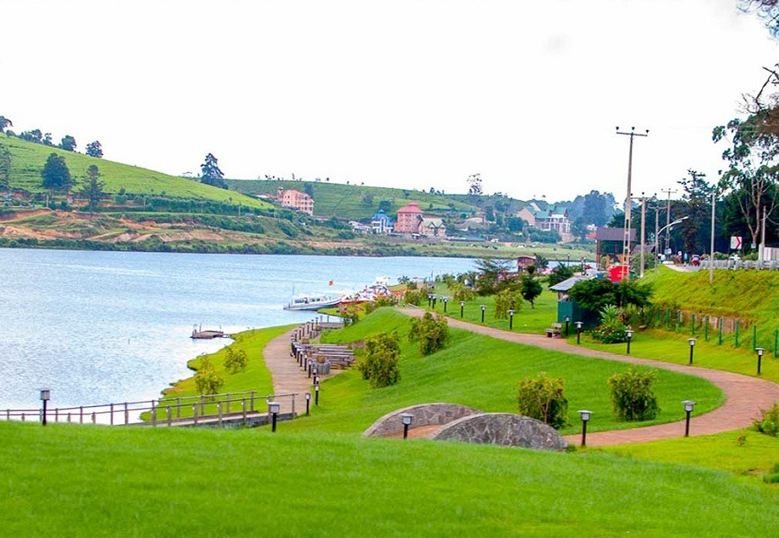
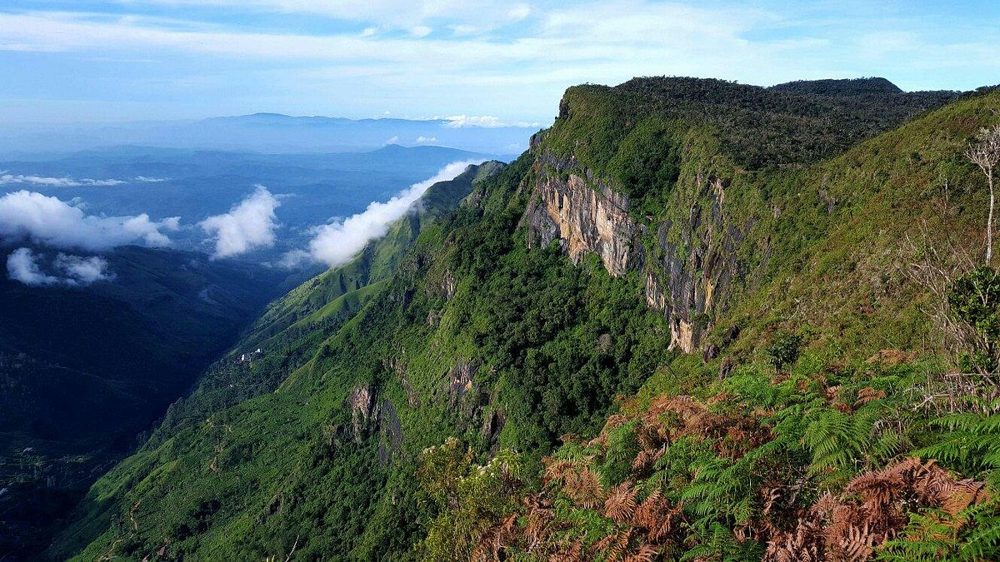
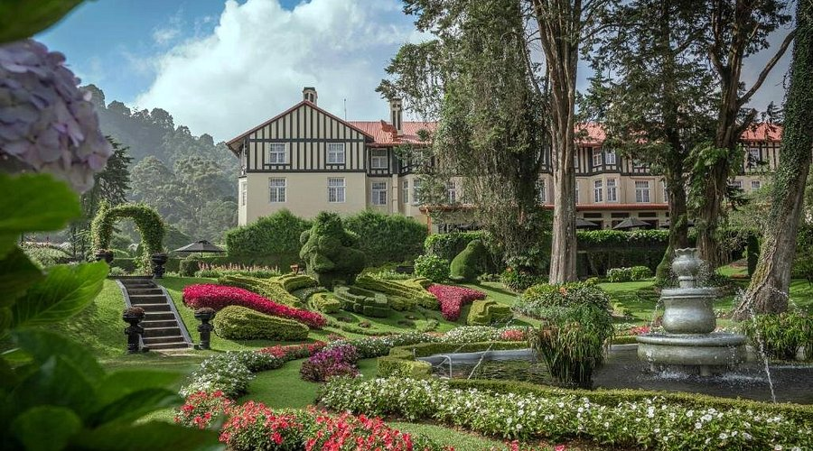

Key Attractions

Gregory Lake
A peaceful lake perfect for boating and scenic walks.

Tea Plantations
Rolling tea fields offering tours and tasting experiences.

Horton Plains
Home to World’s End cliff, waterfalls, and misty trails.

Golf Course
A colonial-era golf club surrounded by lush scenery.

Victorian Town
British-style buildings and charming heritage landmarks.